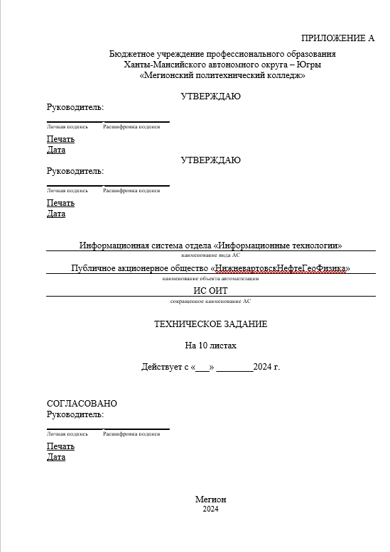

Техническое задание

1. Общие сведения
Настоящее техническое задание распространяется на разработку информационной системы (ИС) отдела «Информационные технологии», необходимой для ПАО «НижневартовскНефтеГеоФизика». Данная ИС предназначена для автоматизации и оптимизации процессов, связанных с поддержанием работоспособности оборудования и технического обслуживания в организации.
Наименование работы: ИС отдела «Информационные технологии»
Разработчик: Бражник Роман Игоревич.
Заказчик: ПАО «НижневартовскНефтеГеоФизика».
Плановые сроки начала и окончания работ по проектированию автоматизированной системы: с 2 сентября 2024 -- до 10 ноября 2024.
Курсовой проект по проектированию автоматизированной системы проводится на основе учебного плана и утвержден БУ «Мегионский политехнический колледж».
Источник финансирования не требуется, поскольку проектирование автоматизированной системы осуществляется в рамках учебного процесса. Данный проект направлен на получение знаний и практических навыков, что позволяет углубить компетенции без необходимости привлечения внешних финансовых ресурсов.
2. Назначение и цели создания автоматизированной системы
Цель проектирования информационной системы для ОИТ --- эффективное и оперативное осуществление технического обслуживания средств вычислительной техники с минимизацией простоев и удовлетворением запросов сотрудников.
Спроектируемая информационная система отдела «Информационные технологии» предназначена для автоматизации процесса обслуживания и управления ресурсами ОИТ.
3. Характеристика объектов автоматизации
Объектом автоматизации является отдел «Информационные технологии». Объект автоматизации обусловлен необходимостью автоматизации и оптимизации поддерживать техническое обслуживание средств вычислительной техники (ТО СВТ), обеспечивать эффективное функционирование рабочих процессов и оптимизировать затраты на обслуживание и ремонт техники.
Информационная система обеспечит следующие функции:
-
авторизация пользователей;
-
учет и обработка обращений сотрудников;
-
ведение базы данных инвентаря и учет состояния техники;
-
создание и обработка заявок на обслуживание;
-
учет и контроль за закупками оборудования и расходных материалов.
Система будет установлена на выделенном сервере, подключенном к корпоративной сети. В условия эксплуатации объекта автоматизации включают:
1. Оптический канал с пропускной способностью не менее 2 Гбит/с;
2. Системы защиты от несанкционированного доступа;
3. Электропитание оборудования первой категории надежности;
4. Промышленную систему вентиляции и кондиционирования;
5. Систему автоматического газового пожаротушения.
4. Требования к автоматизированной системе
Требования к структуре автоматизированной системы включают:
• Авторизация пользователей;
• Подсистема «Акт Наряды» - содержит информацию о нарядах заявок;
• Подсистема «Заявки» - содержит заявки от сотрудников;
• Подсистема «Документы» - содержит документы закупочной деятельности, списанной и утилизированной оргтехники;
• Подсистема «Инвентаризация» - содержит актуальные данные об инвентаре;
• Подсистема «Справочники» - содержит категории справочников: данные об предприятии и данные о средствах вычислительной техники.
Требования к функциям автоматизированной системы включают:
-
Авторизация пользователей;
-
Подсистема «Акт Наряды» - обслуживания нарядов на заявки;
-
Подсистема «Заявки» - обработка заявок на обслуживание от сотрудников;
-
Подсистема «Документы» - проведение закупочной деятельности, списание и утилизация оргтехники;
-
Подсистема «Инвентаризация» - ведение и актуализация данных об оборудовании и инвентаре;
-
Подсистема «Справочники» - хранение данных сотрудников, различных типов данных средств вычислительной техники и данных заявок.
Требования к видам обеспечения автоматизированной системы включают:
-
Для математического вида обеспечения АС не требуется применение математических методов и алгоритмов;
-
Для информационного вида обеспечения АС используется организация данных объектами справочник и документ, состав и структура зависит от наполняемых данных;
-
Для лингвистического вида обеспечения АС возможности расширения наборов языка не требуется, как и тезаурусов и словарей. К способам организации диалога используются поля формы;
-
Для программного вида обеспечения АС требования к составу и программному обеспечению изложены в предыдущем пункте оглавления технического задания;
-
Для технического вида обеспечения АС требуется надёжная инфраструктура, включая серверное оборудование и сети, которые обеспечат бесперебойную работу системы и доступ к ней для всех сотрудников;
-
Для метрологического вида обеспечения АС используется соответствие требованиям, прописанное к автоматизированной системе;
-
Для организационного вида обеспечения АС определяется взаимодействием сотрудников с отделом «Информационные технологии»;
-
Для методического вида обеспечения АС используется ГОСТ 34.602-2020 «Информационные технологии. Комплекс стандартов на автоматизированные системы. Техническое задание на создание автоматизированной системы».
Общие технические требования к АС включают следующее:
-
Численность и квалификация персонала и пользователей не требуется;
-
Автоматизированная система должна обеспечивать выполнение поставленных задач;
-
Система должна обеспечивать высокий уровень надёжности, сводя к минимуму вероятность сбоев и ошибок в работе;
-
Необходимо предусмотреть меры по защите системы от внешних и внутренних угроз, включая физическую безопасность оборудования и защиту программного обеспечения;
-
Интерфейс АС должен быть удобным и интуитивно понятным для пользователей, а также соответствовать современным эстетическим стандартам;
-
Требования к транспортабельности для подвижных АС не требуется;
-
Обслуживание АС должно вестись на стороне администрирования сервера и со стороны клиентской программы;
-
Защита от несанкционированного доступа должна регулироваться авторизацией пользователя, эксплуатация наличием установленной программы;
-
Данные должны храниться на серверах, чтобы не допустить потерю информации;
-
Система должна быть защищена от воздействия внешних факторов, таких как температура, влажность, электромагнитные помехи и другие;
-
Все компоненты и технологии, используемые в АС, должны соответствовать требованиям патентного законодательства и не нарушать права третьих лиц;
-
Требования по стандартизации должны быть соблюдены по разработанному техническому заданию.
5. Состав и содержание работ по созданию автоматизированной системы
Перечень этапов работ:
1. Исследование и изучение информации для теоретической части;
2. Составление аналитической справки;
3. Составление ТЗ;
4. Построение диаграмм вариантов использования;
5. Построение диаграммы классов;
6. Описание проектируемой информационной системы;
7. Прототипирование ИС.
6. Порядок разработки автоматизированной системы
Разработка ведется поэтапно с предварительным тестированием каждой компоненты.
После завершения каждого этапа проводятся интеграционные тесты, чтобы убедиться, что все компоненты работают корректно в составе системы.
На финальной стадии проводится тестирование системы в условиях рабочего процесса, чтобы выявить и устранить возможные ошибки.
После тестирования система передается заказчику для проведения приемочных испытаний.
7. Порядок контроля и приемки автоматизированной системы
Информационная система проходит тестирование методом «Черного ящика» для проверки всех функций через пользовательский интерфейс. В процессе испытаний ведется журнал для фиксации результатов тестов, замечаний и предложений по улучшению. Все испытания проводятся в соответствии с ГОСТ Р 59792-2021.
8. Требования к составу и содержанию работ по подготовке объекта автоматизации к вводу автоматизированной системы в действие
Создание условий функционирования объекта автоматизации, при которых гарантируется соответствие создаваемой АС требованиям, содержащимся в ТЗ на АС включают:
1. Минимальные технические требования:
-
ОС Windows 10 и выше;
-
Процессор Intel Celeron G6900 или аналогичный;
-
Оперативная память не менее 2 Гб;
-
Свободное место на жестком диске не менее 2 Гб.
2. Для ввода системы в действие необходимо:
1. Подготовить рабочие станции;
2. Установить на них ОС и ПО (1С:Предприятие 8);
3. Провести обучение персонала;
4. Настроить рабочие станции для корректной работы с системой.
9. Требования к документированию
Техническое задание выполнено в соответствии с ГОСТ 34.602-2020 «Информационные технологии. Комплекс стандартов на автоматизированные системы. Техническое задание на создание автоматизированной системы».
10. Источники разработки
• ГОСТ 34.602-2020 «Информационные технологии. Комплекс стандартов на автоматизированные системы. Техническое задание на создание автоматизированной системы».
• Данные и требования, предоставленные заказчиком.
ФОРМА ПОСЛЕДНЕГО ЛИСТА ТЗ НА АС
___________________________________________________________
(код ТЗ)
СОСТАВИЛИ
Наименование Должность Фамилия, имя, Подпись Дата
организации, исполнителя отчество
предприятия
СОГЛАСОВАНО
Наименование Должность Фамилия, имя, Подпись Дата
организации, отчество
предприятия